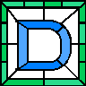

|

Page 62
Appreciative Inquiry is a research technique commonly used in organizational
development and community building. Its main distinction from other methods of
inquiry is its premium on surfacing and affirming positive dynamics among groups of
people, as opposed to looking for problems and/or dysfunction. Indeed, for
practitioners of Appreciative Inquiry, every organization has done something right ---
something worth doing all over again. So instead of asking “what is wrong with us?”
facilitators practicing Appreciative Inquiry ask: “what have we been doing well?”
For the process of Appreciative Inquiry to work best, it’s important that researchers solicit the input of
all members of the organization from the highest ranking of management to the person sitting on the
bottom-rung of the company structure. Each opinion must be given equal weight in the development of
company policy.
Two basic assumptions form the bedrock of Appreciative Inquiry. These assumptions are:
1.
Organizations always move towards the direction that their members ask and the things they
talk about.
2.
Energy for positive change is created when organizations engage in continually remembering
and analyzing circumstances when they are at their best rather than focusing on problems and
how they can be solved.
Appreciative Inquiry works using the 4D Cycle:
Discovery. People often talk to one another, often via structured interviews, to discover the
times when their organization is at their best. These stories are told as richly as possible.
Dream. The dream phase is commonly run as a large group conference with the help of
facilitators. People are encouraged to envision the organization as though the peak moments
identified in the discovery phase were the norm instead of the exception.
Design. A team is empowered to go away and design ways to create the organization dreamed
in the large group conference.
Delivery. The final phase delivers the dream and the new design. It is one of experimentation
and improvisation. Teams are formed to follow up on the design elements and to continue the
appreciative process. This phase may itself contain more small scale appreciative inquiries into
specific aspects of organizational life.
|